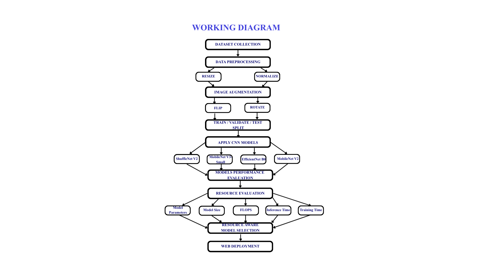

Gastric cancer is a major health concern, and histopathological examination plays an important role in identifying abnormal tissue. However, examining large numbers of histopathological images can be time-consuming and requires considerable expertise.
Deep learning has shown strong potential for automated histopathological image classification. However, highly accurate deep learning models can also require considerable computational resources, making them less suitable for lightweight or deployment-oriented applications.
GastroLite AI explores a resource-aware approach by evaluating lightweight deep learning architectures for gastric cancer histopathological classification and selecting a model that provides a practical balance between classification performance and computational efficiency.
A model is not evaluated only by its classification accuracy. Parameters, model size, computational cost, and inference time are also important when the model is intended for practical deployment.
The GasHisSDB dataset was used for the experimental evaluation. The dataset contains 245,196 gastric histopathological images belonging to normal and abnormal categories.
The dataset was divided into training, validation, and testing subsets using a 70:15:15 split.
Images were normalized using the standard ImageNet mean and standard deviation values. Horizontal flipping and small rotations of up to 10 degrees were used as data augmentation techniques.
Four lightweight or deployment-oriented convolutional neural network architectures were selected for comparison: MobileNetV2, MobileNetV3-Small, EfficientNet-B0, and ShuffleNetV2.
All models were evaluated under the same experimental conditions to provide a fair comparison. Training was performed for five epochs using a batch size of 32.

Figure 1. Overall workflow of the GastroLite AI framework.
The four selected architectures were compared using classification accuracy along with resource-related measures such as parameter count, model size, FLOPs, and inference time.
| Model | Test Accuracy | Parameters | Model Size | FLOPs | Inference / Image |
|---|---|---|---|---|---|
| MobileNetV2 | 98.27% | 2.226M | 8.73 MB | 326.21M | 0.9157 ms |
| MobileNetV3-Small | 98.42% | 1.520M | 5.93 MB | 61.46M | 0.4886 ms |
| EfficientNet-B0 | 98.86% | 4.010M | 15.59 MB | 413.87M | 1.1540 ms |
| ShuffleNetV2 | 97.86% | 1.256M | 4.96 MB | 151.69M | 0.4972 ms |
The model selection process considered both predictive performance and computational efficiency. Resource-related metrics were normalized so that the different models could be compared using a common scale.
Although EfficientNet-B0 achieved the highest test accuracy, MobileNetV3-Small provided a more favorable overall balance between accuracy, computational cost, model size, and inference speed.
MobileNetV3-Small was selected for deployment because it combines high classification accuracy with a significantly lower computational requirement and smaller model size.
To demonstrate the practical use of the selected model, the trained MobileNetV3-Small model was integrated into a web-based prototype.
The prototype allows a user to upload a histopathological image and obtain a model prediction through a simple interface. The website also provides supporting information related to gastric cancer awareness and healthy practices.
The web application is intended as a research prototype for demonstrating model deployment and interaction, rather than as a clinical diagnostic system.
The experimental results demonstrate that lightweight architectures can achieve strong classification performance on gastric histopathological images.
EfficientNet-B0 obtained the highest test accuracy among the four evaluated models. However, it also required the highest number of parameters and FLOPs and had the largest model size.
MobileNetV3-Small achieved 98.42% test accuracy while requiring substantially fewer computational resources. Its 61.46M FLOPs, 5.93 MB model size, and 0.4886 ms inference time per image make it particularly suitable for the deployment-oriented objective of this work.
The current work represents a research prototype and has several opportunities for further development.
GastroLite AI presents a deployment-oriented approach to gastric cancer histopathological image classification by considering both predictive performance and computational efficiency.
Four lightweight deep learning architectures were experimentally compared, and MobileNetV3-Small was selected as the deployment model because of its favorable balance between accuracy and resource requirements.
The work demonstrates how resource-aware model evaluation can help bridge the gap between deep learning experimentation and practical lightweight deployment.
“Awareness today can lead to better health tomorrow.”
Have a question about the project or would like to know more about the research? Feel free to get in touch.